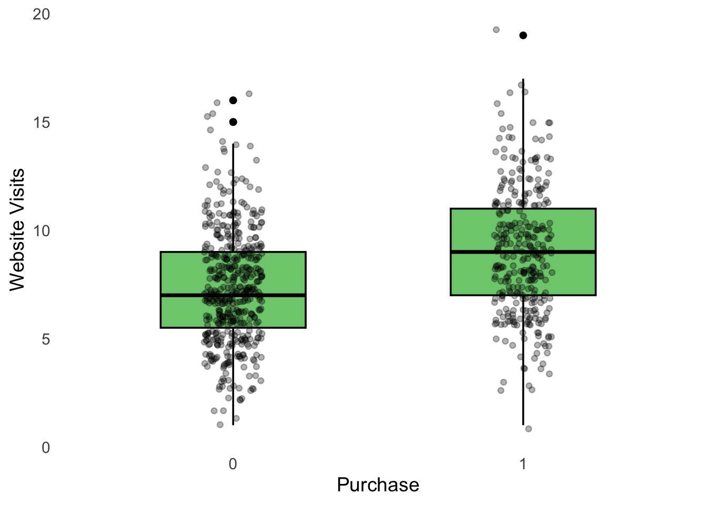

# Clear Environment
rm(list = ls())
# Load packages
library(tidyverse)
source("Functions/EDA_functions.R")
source("Functions/linear_regression_functions.R")14 Logistic Regression: Lab 2
Model Selection and Business Decision
14.1 Introduction
In the previous lab, we introduced logistic regression and the basic classification workflow. We learned how to:
- fit a logistic regression model;
- generate predicted probabilities;
- convert probabilities into predicted classes;
- create a confusion matrix;
- calculate accuracy, precision, recall, and specificity;
- use training and test data;
- evaluate how well a classification model performs on new observations.
In this lab, we extend the workflow by comparing several logistic regression models. In practice, we often have several possible models. Some models are simple, while others include more predictors. This creates the question:
Which model should we use?
To keep the comparison simple, we will compare the candidate models using accuracy. After selecting a model, we will evaluate the selected model using the test data and examine its:
- accuracy;
- precision;
- recall;
- specificity.
The workflow is:
Business problem → Split data → Fit models → Compare models → Select model → Test model → Business decision
14.1.1 Learning Objectives
After completing this lab, you should be able to:
- fit several logistic regression models;
- generate predicted probabilities;
- convert probabilities into predicted classes;
- compare the accuracy of different models;
- select a classification model;
- evaluate the selected model using test data;
- interpret accuracy, precision, recall, and specificity;
- identify different types of classification errors;
- translate model performance into a business recommendation.
14.2 Prepare the R Session
Start by clearing the Environment and loading the packages and functions used in the lab.
14.3 Import the Data
The company now has additional customer information and wants to improve its purchase classification model. The outcome variable is purchase:
0= customer did not purchase;1= customer purchased.
df <- read.csv("Data/logistic_data2.csv")Inspect the data.
summary(df) purchase website_visits time_on_site pages_viewed
Min. :0.0000 Min. : 1.000 Min. : 1.00 Min. : 1.00
1st Qu.:0.0000 1st Qu.: 6.000 1st Qu.:13.40 1st Qu.: 9.00
Median :0.0000 Median : 8.000 Median :18.25 Median :12.00
Mean :0.4012 Mean : 7.991 Mean :18.18 Mean :11.88
3rd Qu.:1.0000 3rd Qu.:10.000 3rd Qu.:22.60 3rd Qu.:14.00
Max. :1.0000 Max. :19.000 Max. :40.30 Max. :24.00
previous_purchases discount_used customer_age
Min. :0.000 Min. :0.0000 Min. :18.00
1st Qu.:2.000 1st Qu.:0.0000 1st Qu.:34.00
Median :3.000 Median :0.0000 Median :42.00
Mean :2.944 Mean :0.3375 Mean :42.27
3rd Qu.:4.000 3rd Qu.:1.0000 3rd Qu.:50.00
Max. :9.000 Max. :1.0000 Max. :76.00 Convert purchase to a factor.
df <- df |>
mutate(
purchase = factor(purchase, ordered = FALSE)
)14.3.1 Questions
- How many observations are in the dataset?
- Which variable is the outcome variable?
- What do the values 0 and 1 represent?
- Which variables could potentially be used as predictors?
14.4 Explore the Data
Before fitting models, we should understand the variables in our data. First, examine the distribution of the outcome variable.
table(df$purchase)
0 1
479 321 Calculate the proportions.
prop.table(
table(df$purchase)
)
0 1
0.59875 0.40125 14.4.1 Questions
- What percentage of customers purchased the product?
- What percentage did not purchase the product?
- Are the two classes approximately balanced?
- Why might class balance matter when evaluating a classification model?
We can also compare some predictors across the two outcome groups. For example, compare website_visits for customers who purchased and customers who did not purchase.
boxplot_grouped(
df$website_visits,
df$purchase,
xlab = "Purchase",
ylab = "Website Visits",
suffix = ""
)
14.4.2 Questions
- Do customers who purchase appear different from customers who do not purchase?
- Do customers who purchase generally have more or fewer website visits?
- Which other variables might be useful for predicting purchase?
14.5 Split the Data
As in the previous labs, we divide the data into two parts:
- 70% training data — used to fit and compare models;
- 30% test data — used to evaluate the selected model.
data_split <- split_data(
df,
train_prop = 0.70,
test_prop = 0.30
)Create the two data frames.
train_data <- data_split$train_data
test_data <- data_split$test_dataCheck their sizes.
nrow(train_data)[1] 560nrow(test_data)[1] 24014.5.1 Questions
- How many observations are in the training data?
- How many observations are in the test data?
- What is the purpose of the training data?
- What is the purpose of the test data?
Training and test data
The training data are used to fit and compare our models.
The test data contain observations that were not used to fit the models.
The test data therefore help us evaluate how well the selected model performs on new observations.
14.6 Fit Candidate Models
We will now fit three candidate logistic regression models. Each model predicts whether a customer purchases the product. We begin with a simple model and gradually add more predictors.
14.6.1 Model 1
Model 1 uses only website_visits.
model_1 <- glm(
purchase ~ website_visits,
data = train_data,
family = binomial
)14.6.2 Model 2
Model 2 adds customer_age.
model_2 <- glm(
purchase ~ website_visits +
customer_age,
data = train_data,
family = binomial
)14.6.3 Model 3
Model 3 includes all available predictors.
model_3 <- glm(
purchase ~ website_visits +
customer_age +
discount_used +
previous_purchases +
pages_viewed +
time_on_site,
data = train_data,
family = binomial
)Inspect the models.
summary(model_1)
Call:
glm(formula = purchase ~ website_visits, family = binomial, data = train_data)
Coefficients:
Estimate Std. Error z value Pr(>|z|)
(Intercept) -2.35189 0.30120 -7.808 5.79e-15 ***
website_visits 0.23286 0.03439 6.770 1.28e-11 ***
---
Signif. codes: 0 '***' 0.001 '**' 0.01 '*' 0.05 '.' 0.1 ' ' 1
(Dispersion parameter for binomial family taken to be 1)
Null deviance: 750.41 on 559 degrees of freedom
Residual deviance: 698.92 on 558 degrees of freedom
AIC: 702.92
Number of Fisher Scoring iterations: 4summary(model_2)
Call:
glm(formula = purchase ~ website_visits + customer_age, family = binomial,
data = train_data)
Coefficients:
Estimate Std. Error z value Pr(>|z|)
(Intercept) -1.805449 0.441838 -4.086 4.38e-05 ***
website_visits 0.232922 0.034513 6.749 1.49e-11 ***
customer_age -0.013234 0.007987 -1.657 0.0975 .
---
Signif. codes: 0 '***' 0.001 '**' 0.01 '*' 0.05 '.' 0.1 ' ' 1
(Dispersion parameter for binomial family taken to be 1)
Null deviance: 750.41 on 559 degrees of freedom
Residual deviance: 696.16 on 557 degrees of freedom
AIC: 702.16
Number of Fisher Scoring iterations: 4summary(model_3)
Call:
glm(formula = purchase ~ website_visits + customer_age + discount_used +
previous_purchases + pages_viewed + time_on_site, family = binomial,
data = train_data)
Coefficients:
Estimate Std. Error z value Pr(>|z|)
(Intercept) -5.12699 0.71735 -7.147 8.86e-13 ***
website_visits 0.25970 0.03732 6.958 3.44e-12 ***
customer_age -0.01434 0.00844 -1.699 0.08938 .
discount_used 0.65082 0.20286 3.208 0.00134 **
previous_purchases 0.34890 0.06244 5.588 2.30e-08 ***
pages_viewed 0.09956 0.03066 3.248 0.00116 **
time_on_site 0.03650 0.01406 2.595 0.00945 **
---
Signif. codes: 0 '***' 0.001 '**' 0.01 '*' 0.05 '.' 0.1 ' ' 1
(Dispersion parameter for binomial family taken to be 1)
Null deviance: 750.41 on 559 degrees of freedom
Residual deviance: 631.53 on 553 degrees of freedom
AIC: 645.53
Number of Fisher Scoring iterations: 4
Focus of this lab
Our main goal is not to interpret every logistic regression coefficient. Instead, we want to compare how well the models classify customers.
14.6.4 Questions
- Which model is the simplest?
- Which model is the most complicated?
- Why might adding more predictors improve classification?
- Why might a more complicated model not necessarily make better predictions for new observations?
14.7 Compare the Models
We now compare how well the three models classify the training observations. To make the comparison simple, we use the same classification threshold for all models:
\[ Threshold = 0.50 \]
A predicted probability of at least 0.50 is classified as 1. A predicted probability below 0.50 is classified as 0.
14.8 Model 1 Predictions
First, generate predicted probabilities using Model 1.
prob_1 <- predict(
model_1,
newdata = train_data,
type = "response"
)Convert the probabilities into predicted classes.
class_1 <- ifelse(
prob_1 >= 0.50,
1,
0
)Calculate the accuracy.
accuracy_1 <- mean(
train_data$purchase == class_1
)
accuracy_1[1] 0.653571414.9 Model 2 Predictions
Repeat the same procedure for Model 2.
prob_2 <- predict(
model_2,
newdata = train_data,
type = "response"
)Convert probabilities into predicted classes.
class_2 <- ifelse(
prob_2 >= 0.50,
1,
0
)Calculate the accuracy.
accuracy_2 <- mean(
train_data$purchase == class_2
)
accuracy_2[1] 0.655357114.10 Model 3 Predictions
Finally, evaluate Model 3.
prob_3 <- predict(
model_3,
newdata = train_data,
type = "response"
)Convert probabilities into predicted classes.
class_3 <- ifelse(
prob_3 >= 0.50,
1,
0
)Calculate the accuracy.
accuracy_3 <- mean(
train_data$purchase == class_3
)
accuracy_3[1] 0.703571414.11 Compare Accuracy
Accuracy is the proportion of all predictions that are correct. We can now compare the training accuracy of the three models.
model_comparison <- data.frame(
Model = c(
"Model 1",
"Model 2",
"Model 3"
),
Accuracy = c(
accuracy_1,
accuracy_2,
accuracy_3
)
)
model_comparison Model Accuracy
1 Model 1 0.6535714
2 Model 2 0.6553571
3 Model 3 0.7035714We can also sort the models from highest to lowest accuracy.
model_comparison |>
arrange(desc(Accuracy)) Model Accuracy
1 Model 3 0.7035714
2 Model 2 0.6553571
3 Model 1 0.653571414.11.1 Questions
- Which model has the highest training accuracy?
- Which model has the lowest training accuracy?
- Does adding more predictors improve training accuracy?
- How large are the differences between the models?
- Does Model 3 perform substantially better than Model 2?
Training accuracy
Higher training accuracy means that a model correctly classifies more of the observations that were used to fit it. However:
Higher training accuracy does not necessarily mean better predictions for new observations.
A more complicated model may fit the training data very well without performing equally well on new data.
14.12 Select a Model
We now select one of the three models. Consider:
- training accuracy;
- model complexity;
- whether the improvement over a simpler model is meaningful.
In reality we will not automatically choose the most complicated model simply because it has slightly higher training accuracy.
14.12.1 Your Model Selection
Selected model:
Write your answer here.
Reason for selecting the model:
Write your answer here.
Assign your selected model to selected_model.
For example, if you selected Model 3:
selected_model <- model_3Change this if you selected another model.
14.13 Evaluate the Selected Model Using Test Data
We now evaluate the selected model using the test data. The test observations were not used when fitting the model. This allows us to examine how well the model classifies new observations.
14.13.1 Generate Predicted Probabilities
Use the selected model to generate predicted probabilities for the test observations.
test_data$predicted_probability <- predict(
selected_model,
newdata = test_data,
type = "response"
)Inspect the probabilities.
head(test_data) purchase website_visits time_on_site pages_viewed previous_purchases
515 1 10 22.1 11 3
716 1 7 23.8 14 7
486 0 5 21.2 12 0
551 0 7 17.0 5 2
743 0 4 18.5 5 3
46 0 5 19.2 12 1
discount_used customer_age predicted_probability
515 0 23 0.52221875
716 0 31 0.72141635
486 0 43 0.07753565
551 0 47 0.10277979
743 0 31 0.09007079
46 0 37 0.1077056214.13.2 Generate Predicted Classes
We continue to use a threshold of 0.50.
test_data <- test_data |>
mutate(
predicted_class = ifelse(
predicted_probability >= 0.50,
1,
0
)
)Inspect the results.
head(test_data) purchase website_visits time_on_site pages_viewed previous_purchases
515 1 10 22.1 11 3
716 1 7 23.8 14 7
486 0 5 21.2 12 0
551 0 7 17.0 5 2
743 0 4 18.5 5 3
46 0 5 19.2 12 1
discount_used customer_age predicted_probability predicted_class
515 0 23 0.52221875 1
716 0 31 0.72141635 1
486 0 43 0.07753565 0
551 0 47 0.10277979 0
743 0 31 0.09007079 0
46 0 37 0.10770562 014.14 Confusion Matrix
Create a confusion matrix.
confusion <- table(
Actual = test_data$purchase,
Predicted = test_data$predicted_class
)
confusion Predicted
Actual 0 1
0 114 25
1 55 46A confusion matrix contains four possible outcomes:
- True Positive (TP) — predicted purchase and the customer purchased;
- True Negative (TN) — predicted no purchase and the customer did not purchase;
- False Positive (FP) — predicted purchase but the customer did not purchase;
- False Negative (FN) — predicted no purchase but the customer purchased.
Extract these values.
TN <- confusion[1, 1]
FP <- confusion[1, 2]
FN <- confusion[2, 1]
TP <- confusion[2, 2]14.14.1 Questions
- How many true positives are there?
- How many true negatives are there?
- How many false positives are there?
- How many false negatives are there?
14.15 Evaluate the Final Model
We now calculate four measures of classification performance:
- accuracy;
- precision;
- recall;
- specificity.
14.15.1 Accuracy
Accuracy is the proportion of all predictions that are correct. In this lab: Of all customers, how many were classified correctly?
accuracy <- mean(
test_data$purchase ==
test_data$predicted_class
)
accuracy[1] 0.666666714.15.2 Precision
Precision is the proportion of predicted positive cases that are actually positive. In this lab: Of all customers predicted to purchase, how many actually purchased?
precision <- TP / (TP + FP)
precision[1] 0.647887314.15.3 Recall
Recall is the proportion of actual positive cases that the model correctly identifies. In this lab: Of all customers who actually purchased, how many did the model correctly identify?
recall <- TP / (TP + FN)
recall[1] 0.455445514.15.4 Specificity
Specificity is the proportion of actual negative cases that the model correctly identifies. In this lab: Of all customers who did not purchase, how many did the model correctly identify?
specificity <- TN / (TN + FP)
specificity[1] 0.820143914.15.5 Questions
- What is the test accuracy?
- What is the precision?
- What is the recall?
- What is the specificity?
- Which measure has the highest value?
- Which measure has the lowest value?
- Does the model appear to classify new observations reasonably well?
14.16 Classification Errors and the Business Problem
A model should not be evaluated only by its accuracy. Different classification errors can have different business consequences. For this problem:
- a false positive means that the model predicts that a customer will purchase, but the customer does not purchase;
- a false negative means that the model predicts that a customer will not purchase, but the customer actually purchases.
Suppose the company uses the model to decide which customers should receive a marketing campaign.
14.16.1 False Positives
A false positive means that the company targets a customer because the model predicts that the customer will purchase, but the customer does not purchase. If the marketing campaign is expensive, false positives may therefore be costly.
14.16.2 False Negatives
A false negative means that the company does not target a customer because the model predicts that the customer will not purchase, even though the customer actually would purchase. If the company wants to avoid missing potential buyers, false negatives may therefore be costly.
14.16.3 Questions
- What is the potential cost of a false positive?
- What is the potential cost of a false negative?
- Which error do you think is more important for this company?
14.17 From Model Evaluation to Business Decision
Good predictive performance does not automatically mean that the company should implement the model. Management also needs to consider whether the classifications are useful for the business problem.
For example:
- Is the classification accuracy sufficiently high?
- Are there too many false positives?
- Are there too many false negatives?
- What are the costs of classification errors?
- Is the required data available when predictions need to be made?
- Is the model simple enough to use and maintain?
This means that there are two different questions:
Model evaluation
How well does the model classify customers?
and
Business decision
Is the model useful enough to implement?
14.18 Final Exercise
Imagine that you are presenting your results to company management. Answer the following questions.
14.18.1 Model Selection
- Which three models did you compare?
- Which predictors were included in each model?
- Which model had the highest training accuracy?
- Which model did you select?
- Why did you select this model?
14.18.2 Test Performance
- What is the test accuracy?
- What is the test precision?
- What is the test recall?
- What is the test specificity?
- How many false positives did the model produce?
- How many false negatives did the model produce?
14.18.3 Business Decision
- Which type of classification error is most important for this business problem?
- Which performance measure is therefore especially important?
- Does the model perform sufficiently well on this measure?
- Would you recommend that the company implement the model?
Conclude with one of the following:
Implement the model
or
Do not implement the model
Briefly justify your decision.